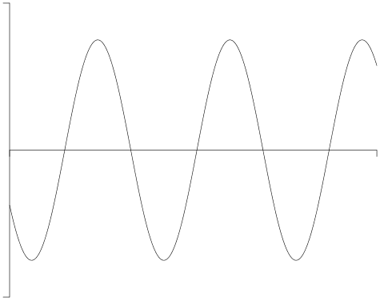

Contents
Draw graphs
With LuaMetaFun
-
\startMPcode{doublefun} draw lmt_function [ xmin = 0, xmax = 20, xstep = .1, ymin = -2, ymax = 2, ystep = .1, sx = 1mm, xsmall = 80, xlarge = 20, sy = 4mm, ysmall = 40, ylarge = 4, linewidth = .025mm, offset = .1mm, code = "1.5 * math.sind (50 * x - 150)", ] xsized 8cm; \stopMPcode
- 
With graph modules
-
2020 graph module
, by Tamara Kocurová, Adriana Kašparová and Tomáš Hála
- Short presentation
- Original source (broken)
- Mirror (checked 2025.01.12)
- mirror of the statistical charts module
- Legacy graph module
With TikZ, Gnuplot, Pgfplot
Draw diagrams
- Flow charts based on graph module .
- Gantt charts
- Steps (XML step charts, by Pragma). This module is written in the process of defining a couple of styles for an educational math book.The macros provide you a way to visualize steps in for instance solving equations.
External links to MetaPost packages and other drawing librairies
- MetaPlot - plot-manipulation macros for use in MetaPost
- MetaObj - object-oriented drawing, see also the page about MetaObj and Labels
- Finomaton - drawing finite state machines
- statsmac - MetaPost for probability and statistics
- MetaUML - MetaPost library for creating UML diagrams, using a textual notation.
- METAGRAPH - drawing (un)directed graphs
- 3D support
- Asymptote 3D drawing - inspired by MetaPost & fully generalizes MetaPost path construction algorithms to three-dimensions
| TODO: needs major review (See: To-Do List) |